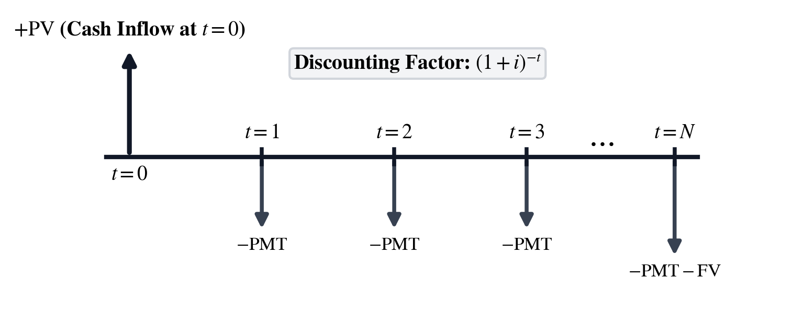
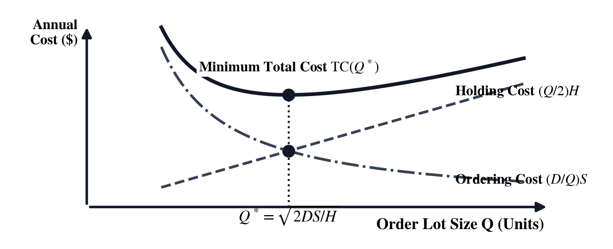
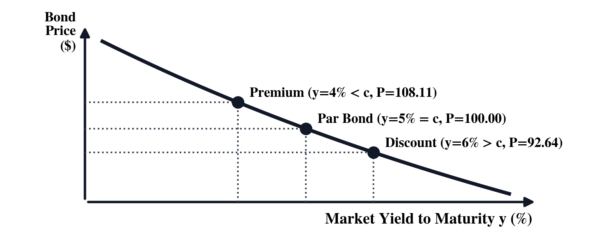
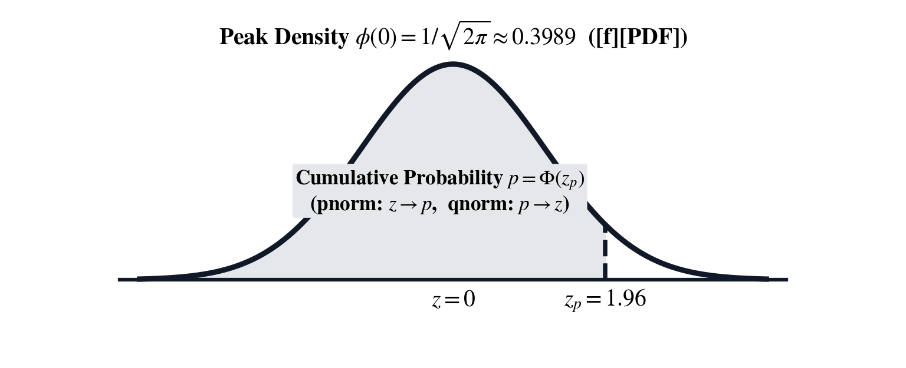
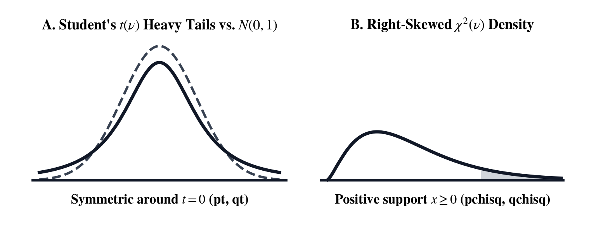

Unit IX: Quantitative Finance, Fixed-Income Valuation & Six Sigma Quality
In 1202, Leonardo of Pisa—known to posterity as Fibonacci—posed a foundational question in Liber Abaci: if a merchant is promised a series of future payments while capital earns compound interest each year, what single lump sum paid today is its fair equivalent? In physics, dimensional analysis forbids adding quantities that do not share the same physical units. In quantitative finance, a parallel conservation law forbids adding or subtracting cash flows that occur at different points in time until each flow is transported to a common reference date. At a \(6.0\%\) annual compound return, an investment of \(\$10{,}000\) today grows over ten years to \(V_{10} = 10{,}000(1.06)^{10} = \$17{,}908.48\), whereas a promise of \(\$10{,}000\) delivered ten years in the future discounts back to a present purchasing power of \(V_0 = 10{,}000(1.06)^{-10} = \$5{,}583.95\).
Seven centuries after Fibonacci, Frederick R. Macaulay's 1938 treatise for the National Bureau of Economic Research generalized multi-period discounting to fixed-income bond pricing, loan amortization timelines, corporate capital budgeting, and the weighted-average maturity of cash flows now known as Macaulay Duration. In 1973, Fischer Black, Myron Scholes, and Robert C. Merton extended continuous-time discounting into stochastic calculus. They proved that a dynamically rebalanced portfolio of shares and risk-free debt eliminates diffusion risk and prices European options via the cumulative standard normal integral. Notice how the continuous-time discount factor \(e^{-rT}\) that transports option strike prices backward in time is the exact mathematical twin of exponential physical relaxation across our earlier field instruments: RC capacitor discharge \(e^{-t/\tau}\) in Unit III: Digital Systems, Bitwise Logic & Embedded Timing, Beer–Lambert optical attenuation \(10^{-\varepsilon \ell c}\) in Unit VI: Stoichiometry, Chemical Equilibrium & Wet-Lab Analytics, and first-order drug elimination \(e^{-k_e t}\) in Unit VIII: Clinical Dosing, Renal Clearance & Pharmacokinetics.
While financial economists formalized the time value of capital and derivative risk, industrial engineers and statisticians developed the mathematics of commercial unit economics and statistical quality control. In 1908, William Sealy Gosset—publishing under the pseudonym "Student" while working as Head Experimental Brewer at Arthur Guinness & Son in Dublin—derived the heavy-tailed small-sample \(t\)-distribution, complementing Karl Pearson's 1900 chi-square goodness-of-fit law and George W. Snedecor's variance-ratio \(F\)-distribution. On May 16, 1924, Walter A. Shewhart drafted a one-page memorandum at Bell Telephone Laboratories introducing the statistical control chart to separate random common-cause variation from assignable mechanical drift. Six decades later, Motorola engineers Bill Smith and Mikel Harry synthesized Shewhart's dispersion limits with blueprint engineering tolerances into the Six Sigma process capability indices \(C_p\) and \(C_{pk}\).
Across the three chapters of this unit, we follow a corporate finance and operations team as they structure a plant mortgage, hedge fixed-income and derivative exposure, and audit a high-precision manufacturing line on the SC-95:
| Chapter | Narrative Problem | Mathematical Concepts | Three Chapter Themes |
|---|---|---|---|
| Chapter 25 | Structuring a \(\$450{,}000\), \(20\text{-year}\) monthly facility mortgage at \(6.0\%\), decomposing Year 1 amortization, and valuing a \(4\text{-year}\) plant expansion | Five-variable compound Time Value of Money balance, geometric principal/interest amortization, Net Present Value, Internal Rate of Return, and gross margin versus markup | 1. Commercial Mortgage Payment & Year 1 Amortization 2. Plant Automation NPV & Internal Rate of Return 3. Gross Margin, Markup & Economic Order Quantity |
| Chapter 26 | Pricing a \(10\text{-year}\), \(5\%\) semiannual corporate bond yielding \(6.0\%\), hedging a \(+50\text{ bps}\) rate hike, and valuing a \(6\text{-month}\) European option (\(S=100, K=100\)) | Semiannual bond discounting, Yield to Maturity root-finding, Macaulay and Modified Duration, Black–Scholes–Merton continuous hedging, and Put–Call Parity | 1. Semiannual Coupon Bond Valuation & Yield to Maturity 2. Macaulay Duration, Modified Duration & Rate Convexity 3. Black–Scholes–Merton Option Pricing & Put–Call Parity |
| Chapter 27 | Auditing a precision shaft grinder (\(\text{LSL } 9.95\text{ mm}\), \(\text{USL } 10.05\text{ mm}\)) whose mean has drifted to \(\mu = 10.01\text{ mm}\) (\(\sigma = 0.01\text{ mm}\)) | Bivariate linear regression trend, Gaussian cumulative tail integrals, Student's \(t\) confidence intervals, sample size \(n^*\), Six Sigma capability (\(C_p, C_{pk}\)), and DPMO | 1. Hourly Spindle Regression & Drift Hypothesis Testing 2. Six Sigma Potential (\(C_p\)) vs. Centered Capability (\(C_{pk}\)) 3. Audit Sample Sizing & Defects Per Million (DPMO) |
Chapter 25: Structuring the Equipment Lease and Valuing the Expansion Plant
The chief financial officer of a precision valve manufacturer is finalizing the capital structure for a new regional assembly plant. To acquire the building, the company is taking out a \(\$450{,}000\) commercial facility mortgage amortized over \(20\text{ years}\) with monthly payments (\(N = 240\text{ months}\)) at a fixed \(6.00\%\) nominal annual interest rate (\(0.50\%\) per month). Before signing the loan covenant, the CFO must determine the exact monthly debt-service payment and provide the corporate tax accountants with the first-year amortization breakdown—separating the twelve monthly payments of Year 1 (Months \(1\text{ through }12\)) into tax-deductible interest expense and balance-sheet principal reduction.
Inside the newly acquired building, the VP of Operations proposes installing a robotic valve-machining cell requiring an upfront capital outlay of \(I_0 = \$120{,}000\) at \(t = 0\). Engineering time studies project that the automated cell will generate uniform net operating cash savings of \(C = \$42{,}000\) per year across a \(4\text{-year}\) planning horizon. Discounting those future cash inflows at the company's \(10.0\%\) weighted-average cost of capital and solving for the project's break-even yield (\(\text{IRR}\)) determines whether the automation investment creates net shareholder value.
Finally, to set wholesale catalog pricing for the new valve line—which costs \(C = \$72.00\) per unit to manufacture and is targeted to sell at \(P = \$120.00\)—the commercial team must reconcile the accounting department's Gross Margin requirement against the sales force's Markup on Cost schedule.
Compound Discounting, Loan Amortization, and the Five-Variable Balance
Every level-payment commercial mortgage, equipment lease, sinking fund, and retirement annuity rests on transporting a schedule of signed periodic cash flows to a common reference epoch and enforcing conservation of value.
The Five-Variable Time Value of Money Recurrence ([TVM])
Across any level-payment financial contract in the [TVM] workspace, five parameters are coupled together on softkeys [N], [I%], [PV], [PMT], and [FV] (alongside payment timing [END]/[BEG]): the total number of compounding or payment periods \(N\) ([N]), the periodic interest rate [I%] expressed as a percentage per period where the decimal rate is \(i = (\text{I\%})/100\) (obtained from the nominal annual rate by dividing by \(M\) compounding periods per year), the initial Present Value \(\text{PV}\) ([PV]) at \(t = 0\), the level periodic Payment \(\text{PMT}\) ([PMT]) at the end of each period \(t = 1, 2, \dots, N\), and the terminal Future Value or balloon balance \(\text{FV}\) ([FV]) at horizon \(t = N\). Discounting each cash flow back to \(t = 0\) and summing the finite geometric series \(\sum_{t=1}^{N} (1+i)^{-t} = (1 - (1+i)^{-N})/i\) yields the Time Value of Money Balance Equation:
Because this equation enforces cash conservation across a two-party transaction, cash inflows received by the decision-maker carry a positive (\(+\)) sign, whereas cash outflows paid out carry a negative (\(-\)) sign.

For the valve manufacturer's \(\$450{,}000\) commercial mortgage (\(\text{PV} = +450{,}000\)) over \(20\text{ years}\) paid monthly (\(N = 20 \times 12 = 240\text{ months}\)) at a \(6.00\%\) nominal annual rate (\(i = 6.00\% / 12 = 0.50\% = 0.005\) per month) fully amortized to \(\text{FV} = 0\), the \(240\text{-month}\) present-value annuity factor is \(a_{\overline{240}|0.005} = (1 - 1.005^{-240}) / 0.005 = 0.6979039 / 0.005 = 139.58077\). Dividing \(-\text{PV}\) by \(a_{\overline{240}|0.005}\) gives a monthly debt-service outflow of \(\text{PMT} = -450{,}000 / 139.58077 = \mathbf{-\$3{,}223.94/\text{month}}\) (\(-\$3{,}223.9398\)).
Geometric Principal and Interest Decomposition Across Amortization Periods ([f] [AMR])
Although the total monthly payment \(|\text{PMT}| = \$3{,}223.94\) remains constant across all \(240\text{ months}\), its internal composition between interest expense \(I_t\) and principal reduction \(P_t\) shifts every month ([f] [AMR]). In Month 1, interest on the initial \(\text{PV} = \$450{,}000\) balance (450000 [ENTER] 0.5 [f] [AMR]) is \(I_1 = \text{PV} \cdot i = 450{,}000 \times 0.005 = \mathbf{\$2{,}250.00}\), leaving \(P_1 = |\text{PMT}| - I_1 = 3{,}223.9398 - 2{,}250.00 = \mathbf{\$973.94}\) to reduce principal. Because each month's principal reduction lowers the outstanding loan balance for the following month, the principal portion grows geometrically as \(P_t = P_1 (1 + i)^{t-1}\), so cumulative principal paid (\(\Delta\text{Prin}_{1\text{–}k}\)), cumulative interest paid (\(\Delta\text{Int}_{1\text{–}k}\)), and remaining loan balance \(B_k\) after \(k\) payments follow closed-form geometric sums:

Evaluating these sums across the first twelve months (\(k = 12\)) of the \(\$450{,}000\) facility mortgage shows that total cash outflow in Year 1 is \(12 \times \$3{,}223.9398 = \mathbf{\$38{,}687.28}\). The cumulative Year 1 principal reduction is \(\Delta\text{Prin}_{1\text{–}12} = \$973.9398 \times [(1.005^{12} - 1)/0.005] = \$973.9398 \times 12.335562 = \mathbf{\$12{,}014.09}\), which reduces the ending Month 12 loan balance to \(B_{12} = \$450{,}000 - \$12{,}014.09 = \mathbf{\$437{,}985.91}\) and leaves a Year 1 tax-deductible interest expense of \(\Delta\text{Int}_{1\text{–}12} = \$38{,}687.28 - \$12{,}014.09 = \mathbf{\$26{,}673.19}\).
Capital Budgeting and Commercial Unit Economics
Once long-term facility financing is in place, corporate capital allocation compares upfront equipment outlays against discounted operating cash inflows and links unit manufacturing cost to wholesale selling price.
Net Present Value, Internal Rate of Return ([g] [CF]), and Effective Annual Rates ([g] [EAR])
When a capital project requires an initial investment \(I_0\) at \(t = 0\) and generates a uniform net operating cash inflow \(C\) across \(N\) periods discounted at the firm's opportunity cost of capital (hurdle rate) \(r = R / 100\), Net Present Value ([g] [CF], opening the [g] [CF] Solver Workspace) subtracts \(I_0\) from the present value of the cash-flow annuity. A positive \(\text{NPV} > 0\) certifies that the asset earns more than the hurdle rate \(r\). The break-even discount rate \(r^*\) at which \(\text{NPV}(r^*) = 0\) defines the Internal Rate of Return (\(\text{IRR}\)), while a nominal Annual Percentage Rate (\(\text{APR}_{\%}\)) compounded \(M\) times per year converts to the Effective Annual Rate ([g] [EAR]), and multi-year lump-sum growth follows Compound Annual Growth Rate ([g] [CGR]) and Return on Investment ([g] [ROI]):
For a single-period cash outlay \(CF_0\) and return \(CF_1\), the rate of return ([g] [ROI]) simplifies directly to \(\text{ROI}_{\%} = [(CF_1 - |CF_0|) / |CF_0|] \times 100\).
In the valve manufacturer's automation proposal (\(I_0 = \$120{,}000\), \(C = \$42{,}000/\text{yr}\) over \(N = 4\text{ years}\) at hurdle rate \(R = 10.0\%\), so \(r = 0.10\)), the \(4\text{-year}\) annuity factor is \((1 - 1.10^{-4}) / 0.10 = 3.169865\). Multiplying by \(\$42{,}000/\text{yr}\) gives a discounted inflow of \(\$133{,}134.35\), and subtracting the \(\$120{,}000\) outlay yields a positive Net Present Value of \(\text{NPV} = \$133{,}134.35 - \$120{,}000 = \mathbf{+\$13{,}134.35}\). Setting \(V = \text{NPV}(r^*) = 0\) in the [g] [CF] ([g] [CF]) Solver Workspace requires \(a_{\overline{4}|r^*} = 120{,}000 / 42{,}000 = 2.857143\), which resolves via [g] [SOLVE] \(\to\) [R] to an Internal Rate of Return of \(\text{IRR} = \mathbf{14.96\%/\text{yr}}\)—exceeding the \(10.0\%\) hurdle rate by nearly \(500\text{ basis points}\).
Gross Margin ([f] [MGN]), Markup on Cost ([g] [MKP]), Breakeven ([f] [BEP]), and Economic Order Quantity ([g] [EOQ])
For a manufactured product with unit cost \(C\) and wholesale selling price \(P\), the unit gross profit \((P - C)\) is measured in financial statements as Gross Margin ([f] [MGN], profit as a percentage of selling price \(P\)) and in cost-plus pricing sheets as Markup on Cost ([g] [MKP], profit as a percentage of unit cost \(C\)):
Simultaneously, a plant with fixed overhead \(F_{\text{fixed}}\) and unit contribution margin \(M_c = P - V\) reaches its Breakeven Volume ([f] [BEP]) at \(Q_{\text{BEP}}^* = F_{\text{fixed}} / (P - V)\), depreciates an asset of net cost \((C_{\text{cost}} - S_{\text{salvage}})\) over \(L\) years via Straight-Line Depreciation ([g] [DEP], \(D_{\text{annual}} = (C_{\text{cost}} - S_{\text{salvage}})/L\)), and minimizes combined annual ordering and holding cost for annual demand \(D\), setup cost \(S\), and holding cost \(H\) at Ford W. Harris and R. H. Wilson's Economic Order Quantity ([g] [EOQ]):

For the valve assembly with unit cost \(C = \$72.00\) and selling price \(P = \$120.00\) (unit gross profit \(\$48.00\)), the Gross Margin ([f] [MGN]) is \(\text{MGN}_{\%} = (48.00 / 120.00) \times 100 = \mathbf{40.00\%}\), whereas the Markup on Cost ([g] [MKP]) is \(\text{MKP}_{\%} = (48.00 / 72.00) \times 100 = \mathbf{66.67\%}\). Covering \(\$36{,}000\) of monthly fixed plant overhead at \(P - V = \$48.00/\text{unit}\) ([f] [BEP]) requires a breakeven volume of \(Q_{\text{BEP}}^* = 36{,}000 / 48.00 = \mathbf{750\text{ valves/month}}\), and ordering raw brass forgings with annual demand \(D = 12{,}000\text{ units/yr}\), setup cost \(S = \$90/\text{order}\), and holding cost \(H = \$6.00/\text{unit/yr}\) ([g] [EOQ]) yields an optimal batch size of \(Q_{\text{EOQ}}^* = \sqrt{(2 \times 12{,}000 \times 90)/6.00} = \sqrt{360{,}000} = \mathbf{600\text{ units/order}}\).
Mortgage Structuring and Capital Budgeting on the Stack and in the Solver Workspace
The SC-95 integrates the five-variable Time Value of Money workspace ([TVM]: softkeys [N], [I%], [PV], [PMT], [FV], [END]/[BEG]), loan interest amortization ([f] [AMR]), discounted cash-flow analysis ([g] [CF], opening the [g] [CF] Solver Workspace), and commercial unit-economics keys ([f] [MGN], [g] [MKP], [g] [DEP], [f] [BEP], [g] [EOQ], [g] [EAR], [g] [CGR], [g] [ROI]) across the RPN stack and Bidirectional Equation Solver Workspaces ([g] [SOLVE] / [XEQ]):
| Key / Solver | Operation | Stack Inputs (\(Y, X\)) | Governing Expression & Solver Softkeys ([LFU0]–[LFU5]) |
|---|---|---|---|
| [TVM] | Five-Variable TVM Workspace | Value in \(X \to\) tap softkey | \(\text{PV} + \text{PMT}\,a_{\overline{N}\rvert i} + \text{FV}(1+i)^{-N} = 0\) ([N] [I%] [PV] [PMT] [FV] [END]) |
| [f] [AMR] | Loan Amortization Interest | \(Y = \text{Balance } B\), \(X = i_{\%}\) | Period interest \(I_t = B \cdot (i_{\%}/100)\); Geometric \(\Delta\text{Prin}_{1\text{–}k} = P_1\frac{(1+i)^k - 1}{i}\) |
| [g] [CF] | Cash Flow / [g] [CF] & [g] [CF] Solver | \(Y = CF_1\), \(X = R_{\%}\) | Stack: \(\frac{Y}{1+X/100}\); Solver ([g] [CF]): V = C×(1-(1+R/100)⁻ᴺ)/(R/100) - I ([V] [C] [R] [N] [I]) |
| [g] [ROI] / [g] [CGR] | Return on Investment & CAGR | \(Y = P_0\), \(X = F_N\) | Stack: \(\frac{X - Y}{Y} \times 100\); Solver ([g] [CGR]): F = P × (1 + R/100)^N ([F] [P] [R] [N]) |
| [f] [MGN] / [g] [MKP] | Gross Margin & Markup | \(Y = \text{Cost } C\), \(X = \text{Price } P\) | Stack & Solver: \(\text{MGN}_{\%} = \frac{P - C}{P}\times 100\) ([M] [P] [C]); \(\text{MKP}_{\%} = \frac{P - C}{C}\times 100\) ([U] [P] [C]) |
| [f] [BEP] / [g] [EOQ] | Breakeven & Wilson EOQ | [g] [EOQ]: \(Y = D\cdot S, X = H\) | [f] [BEP]: Q = F / (P - V) ([Q] [F] [P] [V]); [g] [EOQ]: Q = √(2×D×S/H) ([Q] [D] [S] [H]) |
Solving the Commercial Mortgage and Year 1 Amortization on the Stack
To structure the \(\$450{,}000\), \(20\text{-year}\) monthly mortgage (\(\text{PV} = 450{,}000\), \(\text{FV} = 0\)) without pre-dividing the \(6.0\%\) annual interest rate or \(20\text{-year}\) term in his head, the CFO presses [TVM], lets the RPN stack compute \(N = 20 \times 12 = 240\text{ months}\) ([N]) and periodic rate \(\text{I\%} = 6.0 / 12 = 0.50\%/\text{month}\) ([I%]), solves for [PMT], and evaluates the Month 1–12 principal reduction and interest expense ([f] [AMR]) on the stack:
| Keystroke | Register T | Register Z | Register Y | Register X | What Happens on the Stack |
|---|---|---|---|---|---|
[TVM] 20 [ENTER] 12 [×] [N] 6 [ENTER] 12 [÷] [I%] |
\(0\) | \(0\) | \(240\) | \(0.5\) | Open [TVM] and store \(N = 20 \times 12 = 240\text{ mo}\) and \(i = 6 / 12 = 0.50\%\text{/mo}\) |
450000 [PV] 0 [FV] [g] [SOLVE] [PMT] |
\(240\) | \(0.5\) | \(450000\) | \(-3223.94\) | Store \(\text{PV} = 450{,}000, \text{FV} = 0\) and solve \(\text{PMT} = -\$3{,}223.94/\text{mo}\) |
[+/-] [ENTER] [ENTER] 450000 [ENTER] 0.5 [f] [AMR] [-] |
\(3223.94\) | \(3223.94\) | \(3223.94\) | \(973.9398\) | Subtract Month 1 interest (\(\$2{,}250.00\) via [f] [AMR]) from \(\lvert\text{PMT}\rvert\): \(P_1 = \$973.94\) |
1.005 [ENTER] 12 [g] [yˣ] 1 [-] 0.005 [÷] [×] |
\(3223.94\) | \(3223.94\) | \(3223.94\) | \(12014.09\) | Accumulate Year 1 principal reduction \(\Delta\text{Prin}_{1\text{–}12} = \$12{,}014.09\) |
[x⇄y] 12 [×] [x⇄y] [-] |
\(3223.94\) | \(3223.94\) | \(3223.94\) | \(26673.19\) | Subtract \(\Delta\text{Prin}_{1\text{–}12}\) from \(12\lvert\text{PMT}\rvert\): Year 1 interest \(\Delta\text{Int}_{1\text{–}12} = \$26{,}673.19\) |
Subtracting Year 1 principal 12014.09 in Register \(Y\) from 450000 in Register \(Z\) confirms the Month 12 ending balance \(B_{12} = \mathbf{\$437{,}985.91}\).
Evaluating Plant Automation NPV, IRR, and Valve Margin in the Solver Workspaces
Next, the CFO opens the [g] [CF] (NPV: V = C×(1-(1+R/100)⁻ᴺ)/(R/100) - I) Solver Workspace to evaluate the \(4\text{-year}\), \(\$42{,}000/\text{yr}\) automation cash-flow stream at the \(R = 10.0\%\) hurdle rate net of the \(I = \$120{,}000\) outlay, solves backward via Secant–Brent root-finding for the multi-period Internal Rate of Return (\(\text{IRR}\)) where \(V = 0\) and the break-even annual savings \(C\), and computes both Gross Margin ([f] [MGN]) and Markup on Cost ([g] [MKP]) for the \(\$72.00 / \$120.00\) valve assembly:
| Keystroke | Solver Display / Register X | What Happens in the [g] [CF], [f] [MGN], and [g] [MKP] Workspaces |
|---|---|---|
| [C] [g] [CF] | NPV: V = C×(1-(1+R)⁻ᴺ)/R - I |
Open the [g] [CF] Solver Workspace with softkeys [V], [C], [R], [N], [I] |
42000 [C] 10 [R] 4 [N] 120000 [I] [g] [SOLVE] [V] |
\(13{,}134.3515\) | Solve forward for Net Present Value \(V = \mathbf{+\$13{,}134.35}\) at \(R = 10.0\%\) hurdle rate |
0 [V] [g] [SOLVE] [R] |
\(14.9631\) | Store break-even \(V = 0\) and solve backward via root-finding for \(\text{IRR} = \mathbf{14.9631\%/\text{yr}}\) |
10 [R] [g] [SOLVE] [C] |
\(37{,}856.4965\) | Restore \(R = 10.0\%\) and solve backward for break-even annual savings \(C = \mathbf{\$37{,}856.50/\text{yr}}\) |
72 [ENTER] 120 [f] [MGN] |
\(40.0000\) | Compute valve Gross Margin \(\text{MGN}_{\%} = (120 - 72)/120 = \mathbf{40.00\%}\) (opens [f] [MGN] workspace) |
72 [ENTER] 120 [g] [MKP] |
\(66.6667\) | Compute valve Markup on Cost \(\text{MKP}_{\%} = (120 - 72)/72 = \mathbf{66.67\%}\) (opens [g] [MKP] workspace) |
Try It on the Stack
Apply the five-key [TVM] solver, discounted cash-flow [g] [CF] ([g] [CF]) workspace, and unit-economics operators to these three corporate finance problems:
- Equipment Lease with Residual Buyout Balloon ([TVM]): A \(5\text{-year}\) monthly CNC equipment lease (\(N = 60\text{ months}\)) finances \(\text{PV} = \$180{,}000\) at \(7.20\%\) APR with a \(\$30{,}000\) residual purchase obligation at maturity (\(\text{FV} = -30{,}000\)). Press [TVM], key
5[ENTER]12[×] [N],7.2[ENTER]12[÷] [I%],180000[PV], and30000[+/-] [FV], then press [g] [SOLVE] [PMT]. (Verified Register \(X\) result: \(\text{PMT} = \mathbf{-\$3{,}177.26/\text{month}}\).) - Packaging Line NPV and Multi-Period IRR ([g] [CF] & [g] [ROI]): In the [g] [CF] ([g] [CF]) Solver Workspace ([C] [g] [CF]), evaluate the Net Present Value of a packaging line costing \(I = \$85{,}000\) that saves \(C = \$26{,}000/\text{yr}\) over \(N = 5\text{ years}\) at an \(R = 8.0\%\) discount rate (
26000[C]8[R]5[N]85000[I] [g] [SOLVE] [V]), then store0[V] and press [g] [SOLVE] [R] to find the multi-year \(\text{IRR}\) (and compare against the single-year return on a \(\$50{,}000\) note returning \(\$56{,}250\) via50000[ENTER]56250[g] [ROI]). (Verified Register \(X\) results: \(\text{NPV} = \mathbf{+\$18{,}810.46}\), \(5\text{-yr }\text{IRR} = \mathbf{16.09\%}\), and \(1\text{-yr }\text{ROI} = \mathbf{12.50\%}\).) - Gross Margin ([f] [MGN]), Breakeven Volume ([f] [BEP]), and Wilson EOQ ([g] [EOQ]): For an industrial pump costing \(C = \$210\) and selling for \(P = \$350\), evaluate [f] [MGN] and [g] [MKP] (
210[ENTER]350[f] [MGN]210[ENTER]350[g] [MKP]), open the [f] [BEP] Solver Workspace ([C] [f] [BEP]) to find the monthly breakeven volume [Q] for \(F = \$49{,}000\), \(P = \$350\), \(V = \$210\) (49000[F]350[P]210[V] [g] [SOLVE] [Q]), and compute [g] [EOQ] for annual demand \(D = 8{,}000\), order cost \(S = \$100\), and holding cost \(H = \$4.00\) (8000[ENTER]100[×]4[g] [EOQ]). (Verified Register \(X\) results: \(\text{MGN}_{\%} = \mathbf{40.00\%}\), \(\text{MKP}_{\%} = \mathbf{66.67\%}\), \(Q_{\text{BEP}}^* = \mathbf{350.0\text{ units}}\), and \(Q_{\text{EOQ}}^* = \mathbf{632.46\text{ units}}\).)
From corporate mortgage amortization and plant capital budgeting in Chapter 25, we move in Chapter 26 to the fixed-income and derivatives trading desk—pricing a ten-year corporate bond, measuring its duration risk against a fifty-basis-point rate spike, and valuing a six-month European option via Black–Scholes–Merton.
Chapter 26: Hedging the Semiannual Corporate Bond Against a Rate Spike
On the institutional fixed-income desk, a portfolio manager holds a \(10\text{-year}\) senior corporate bond with a par redemption value of \(F = 100.00\) that pays a \(5.00\%\) nominal annual coupon in semiannual installments (\(C_{\text{semi}} = 2.50\) every six months across \(N = 20\) half-year periods, or \(C_{\text{ann}} = 5.00\) across \(10\) annual periods). Credit spreads and Treasury yields have risen since issuance, pushing the bond's market Yield to Maturity to \(6.00\%\) (\(Y = 3.00\%\) per half-year). Before the Federal Open Market Committee announcement at 2:00 p.m., the manager must price the discount bond and calculate its Macaulay Duration and Modified Duration to quantify how many dollars the position will lose if yields spike by another \(+50\text{ basis points}\) (\(\Delta y = +0.50\%\)).
Across the trading floor on the equity derivatives desk, a strategist is structuring a \(6\text{-month}\) (\(T = 0.50\text{ yr}\)) European collar on an industrial index currently trading at a spot price of \(S_0 = 100.00\) with an at-the-money strike price of \(K = 100.00\), a continuous risk-free interest rate of \(r = 5.00\%\) (\(0.05\)), and an implied annualized volatility of \(\sigma = 20.00\%\) (\(0.20\)).
To price both the European Call Option and Put Option—and determine the exact share delta (\(\Delta = \Phi(d_1)\)) required to hedge the position dynamically—the strategist evaluates Fischer Black, Myron Scholes, and Robert Merton's partial differential equation solution using the cumulative standard normal distribution.
Fixed-Income Bond Valuation and Duration Interest-Rate Sensitivity
A fixed-coupon bond is a portfolio of two distinct cash-flow promises: a level annuity of periodic coupon payments \(C\) and a single zero-coupon lump-sum redemption of par value \(F\) at maturity.
Discounting Coupon Annuities and Par Redemption Across Market Yields ([g] [BND])
For a bond with par redemption value \(F = 100\), periodic coupon payment \(C\), and \(N\) remaining periods to maturity discounted at periodic Yield to Maturity (\(y = Y/100\)), the fair market Bond Price ([g] [BND], \(P_{\text{bond}}\)) is the sum of the present value of the coupon stream and the discounted par redemption:
In the United States corporate and Treasury bond markets, a \(10\text{-year}\) bond paying a \(5.00\%\) annual coupon rate distributes \(C_{\text{semi}} = 2.50\) every six months across \(N_{\text{semi}} = 20\) semiannual periods at a periodic yield of \(Y_{\text{semi}} = Y_{\text{nom}} / 2 = 3.00\%\) (\(y = 0.030\)), whereas Eurobonds pay \(C_{\text{ann}} = 5.00\) once per year across \(N_{\text{ann}} = 10\) annual periods at \(Y_{\text{ann}} = 6.00\%\) (\(y = 0.060\)). When the market yield equals the coupon rate (\(y = C/F\)), \(P_{\text{bond}} = 100.00\) (par). When \(y > C/F\), \(P_{\text{bond}} < 100.00\) (discount). And when \(y < C/F\), \(P_{\text{bond}} > 100.00\) (premium).

Evaluating the \(10\text{-year}\), \(5.00\%\) corporate bond at a \(6.00\%\) market yield under exact semiannual compounding (\(N = 20\), \(C = 2.50\), \(Y = 3.00\%\)) in the [g] [BND] workspace gives a coupon annuity present value of \(2.50 \times [(1 - 1.03^{-20}) / 0.03] = 2.50 \times 14.877475 = 37.19369\) and a discounted par value of \(100(1.03)^{-20} = 55.36758\), summing to a discount price of \(P_{\text{semi}} = \mathbf{92.5613\text{ USD}}\). Under annual compounding (\(N = 10\), \(C = 5.00\), \(Y = 6.00\%\)), the coupon stream is \(5.00 \times 7.360087 = 36.80044\) and discounted par is \(100(1.06)^{-10} = 55.83948\), yielding \(P_{\text{ann}} = \mathbf{92.6400\text{ USD}}\).
Macaulay Duration, Modified Duration, and Rate-Hike Convexity
In 1938, Frederick Macaulay defined the effective time horizon of a bond—Macaulay Duration (\(D_{\text{Mac}}\))—as the present-value-weighted average arrival time of its cash flows, which admits a closed-form algebraic expression in terms of periodic coupon rate \(c = C/F\), periodic yield \(y\), and period count \(N\). Dividing Macaulay Duration (in years) by \((1 + y)\) yields the first-derivative price sensitivity with respect to yield, known as Modified Duration (\(D_{\text{Mod}}\)):
Here \(D_{\text{Mod}}\) measures the percentage price change per \(100\text{ percentage-point}\) (\(1.00\)) change in yield. Because the true price-yield curve \(P_{\text{bond}}(y)\) is strictly convex (\(d^2 P / dy^2 > 0\)), the linear tangent line \(-D_{\text{Mod}} \cdot \Delta y\) slightly overstates price drops when yields rise and slightly understates price gains when yields fall.
For our semiannual \(10\text{-year}\), \(5.00\%\) corporate bond yielding \(6.00\%\) (\(c = 0.025\), \(y = 0.030\), \(N = 20\) half-years), the closed-form formula gives \(D_{\text{Mac,periods}} = (1.03 / 0.03) - [1.03 + 20(-0.005)] / [0.025(1.03^{20} - 1) + 0.03] = 34.3333 - (0.93 / 0.0501528) = \mathbf{15.7900\text{ half-years}}\), or \(D_{\text{Mac,yr}} = 15.7900 / 2 = \mathbf{7.8950\text{ years}}\). Dividing by \((1 + 0.03)\) yields a Modified Duration of \(D_{\text{Mod}} = 7.8950 / 1.03 = \mathbf{7.6650\text{ years}}\) (and for the annual-coupon bond, \(D_{\text{Mac}} = \mathbf{8.0225\text{ years}}\) and \(D_{\text{Mod}} = 8.0225 / 1.06 = \mathbf{7.5684\text{ years}}\)). Against a sudden \(+50\text{ bps}\) (\(\Delta y = +0.0050\)) rate spike to \(6.50\%\), Modified Duration predicts a price decline of \(\Delta P / P \approx -7.6650 \times 0.0050 = \mathbf{-3.8325\%}\), or \(\Delta P \approx -92.5613 \times 0.038325 = \mathbf{-\$3.5474}\) per \(\$100\) par (to \(\$89.0139\), compared to the exact repriced value of \(\$89.1085\) at \(Y_{\text{semi}} = 3.25\%\)).
Black–Scholes–Merton Continuous-Time Option Valuation
While a bond promises deterministic cash flows, an equity option confers the right—without the obligation—to buy (Call) or sell (Put) an underlying asset at a fixed strike price \(K\) on expiration date \(T\) only if the terminal spot price \(S_T\) finishes favorably.
Risk-Neutral Log-Normal Diffusion and the Call Option Formula ([g] [pN])
Assuming the underlying asset price \(S_t\) follows geometric Brownian motion \(dS_t = \mu S_t\,dt + \sigma S_t\,dW_t\) with annualized volatility \(\sigma\) and continuous risk-free interest rate \(r\), Fischer Black, Myron Scholes, and Robert Merton proved in 1973 that the drift rate \(\mu\) cancels out of a continuously delta-hedged portfolio. The arbitrage-free price of a European Call Option (\(C_{\text{call}}\)) on a non-dividend-paying asset of spot price \(S_0\) with strike price \(K\) and time to expiration \(T\) (in years) is governed by the standard normal cumulative distribution function \(\Phi(z) = \text{pnorm}(z)\) ([g] [pN]):
In this PDE solution, \(\Phi(d_1)\) is the option's Delta (\(\Delta_{\text{call}} = \partial C_{\text{call}} / \partial S_0\), the number of underlying shares held per option to remain delta-neutral), \(K e^{-rT}\) is the continuously discounted present value of the strike price, and \(\Phi(d_2)\) is the risk-neutral probability that the option expires in the money (\(S_T > K\)).

For our \(6\text{-month}\) (\(T = 0.50\text{ yr}\)) European call option with \(S_0 = 100.00\), \(K = 100.00\), \(r = 0.05\), and \(\sigma = 0.20\), the volatility-time product is \(\sigma\sqrt{T} = 0.20\sqrt{0.50} = \mathbf{0.141421}\). Because the option is at the money (\(\ln(100/100) = 0\)), the numerator of \(d_1\) is \((0.05 + \frac{1}{2}(0.04))(0.50) = 0.070 \times 0.50 = 0.0350\), giving \(d_1 = 0.0350 / 0.141421 = \mathbf{+0.247487}\) and \(d_2 = 0.247487 - 0.141421 = \mathbf{+0.106066}\). Integrating the standard normal curve at \(d_1\) and \(d_2\) via [g] [pN] yields \(\Phi(d_1) = \mathbf{0.597734}\) (\(\Delta_{\text{call}} \approx 59.77\text{ shares per }100\text{-share contract}\)) and \(\Phi(d_2) = \mathbf{0.542235}\). With discounted strike \(K e^{-rT} = 100 e^{-0.025} = \mathbf{97.53099}\), the fair European call premium is \(C_{\text{call}} = 100(0.597734) - 97.53099(0.542235) = 59.7734 - 52.8847 = \mathbf{\$6.8887 \approx \$6.89}\).
Put–Call Parity and European Put Option Valuation
To prevent static arbitrage between a protective put portfolio (\(S_0 + P_{\text{put}}\)) and a fiduciary call portfolio (\(C_{\text{call}} + K e^{-rT}\))—both of which deliver an identical payoff of \(\max(S_T, K)\) at expiration \(T\)—the European Put Option (\(P_{\text{put}}\)) must satisfy Hans Stoll's (1969) Put–Call Parity identity:
Here \(\Phi(-d_1) = 1 - \Phi(d_1)\) gives the magnitude of the put option's negative delta (\(\Delta_{\text{put}} = \Phi(d_1) - 1 = -0.402266\)).
Applying Put–Call Parity to our \(6\text{-month}\) at-the-money option (\(C_{\text{call}} = \$6.8887\), \(S_0 = \$100.00\), \(K e^{-rT} = \$97.5310\)) yields a European put price of \(P_{\text{put}} = 6.8887 - 100.00 + 97.5310 = \mathbf{\$4.4197 \approx \$4.42}\). Notice why an at-the-money call (\(S_0 = K = 100\)) trades \(\$2.47\) higher than the corresponding put: positive risk-free interest rates (\(r = 5\%\)) reduce the present value of the strike price paid by the call holder by \(100 - 97.5310 = \$2.4690\).
Bond Duration and Black–Scholes Option Pricing on the Stack and in the Solver Workspace
The SC-95 combines the fixed-income Bidirectional [g] [BND] Solver Workspace ([g] [BND]: P = C×(1-(1+Y/100)⁻ᴺ)/(Y/100) + F×(1+Y/100)⁻ᴺ, softkeys [P], [C], [Y], [N], [F]), calendar day-count operators ([f] [▸YR], [g] [▸YMD], [f] [DT+], [g] [ΔD]), and direct Row 2 normal distribution keys ([g] [pN], [f] [qN], [rN]) to solve forward for clean bond price \(P\), solve backward via Secant–Brent / Newton–Raphson root-finding for periodic Yield to Maturity \(Y\), and price European options on the RPN stack:
| Key / Solver | Operation | Stack Inputs / Softkeys | Governing Expression & Solver Schema |
|---|---|---|---|
| [g] [BND] | Bond Price & YTM Solver | Stack: \(Y = C, X = P\) • Solver: [P] [C] [Y] [N] [F] | Stack: Current yield \((C/P)\times 100\); Solver: \(P = C a_{\overline{N}\rvert y} + F(1+y)^{-N}\) |
| [g] [pN] / [f] [qN] | Normal CDF & Quantile | Register \(X\): \(z\)-score ([g] [pN]) or area \(p\) ([f] [qN]) | \(\Phi(z) = \text{pnorm}(X)\) ([g] [pN] workspace: [P] [X] [M] [S]) |
| [g] [EAR] | Effective Annual Rate | Register \(Y\): \(\text{APR}_{\%}\), Register \(X\): Periods \(M\) | \(\text{EAR}_{\%} = [(1 + Y/(100X))^X - 1]\times 100\) ([E] [A] [M]) |
| [f] [▸YR] / [g] [▸YMD] / [g] [ΔD] | Calendar & Day-Count Accrual | \(Y = \text{Start Date}\), \(X = \text{End Date}\) | Converts day counts and ISO dates for accrued bond interest |
Pricing the Corporate Bond and Solving Yield to Maturity in the [g] [BND] Solver Workspace
On the fixed-income desk, the portfolio manager opens the [g] [BND] (P = C×f(Y,N) + F(1+Y)⁻ᴺ) Solver Workspace ([C] [g] [BND]) to price the \(10\text{-year}\), \(5.0\%\) corporate bond under both annual compounding (\(C = 5.0\), \(Y = 6.0\%\), \(N = 10\), \(F = 100\)) and exact semiannual compounding (\(C = 2.50\), \(Y = 3.00\%\), \(N = 20\), \(F = 100\)), reprices the bond at a \(+50\text{ bps}\) (\(6.50\%\) nominal, \(Y = 3.25\%\) semiannual) yield spike, and solves backward via [g] [SOLVE] \(\to\) [Y] to verify the implied Yield to Maturity from the screen price:
| Keystroke | Solver Display / Register X | What Happens in the [g] [BND] Solver Workspace |
|---|---|---|
| [C] [g] [BND] | BND: P = C×f(Y,N)+F(1+Y)⁻ᴺ |
Open the [g] [BND] Solver Workspace with softkeys [P], [C], [Y], [N], [F] |
5 [C] 6 [Y] 10 [N] 100 [F] [g] [SOLVE] [P] |
\(92.6399\) | Price \(10\text{-yr}\), \(5\%\) annual-coupon bond at \(6.0\%\) yield: \(P_{\text{ann}} = \mathbf{\$92.6400}\) |
2.5 [C] 3 [Y] 20 [N] 100 [F] [g] [SOLVE] [P] |
\(92.5613\) | Price exact semiannual bond (\(C=2.5, Y=3\%, N=20\)): \(P_{\text{semi}} = \mathbf{\$92.5613}\) |
3.25 [Y] [g] [SOLVE] [P] |
\(89.1085\) | Reprice semiannual bond after \(+50\text{ bps}\) hike (\(Y = 3.25\%\)): \(P_{\text{exact}} = \mathbf{\$89.1085}\) |
92.5613 [P] [g] [SOLVE] [Y] 2 [×] |
\(6.0000\) | Solve backward via root-finding for semiannual \(Y = 3.0000\%\) and double for \(\mathbf{6.0000\%}\) nominal YTM |
Comparing the linear Modified Duration estimate (\(92.5613 \times (1 - 0.038325) = \mathbf{\$89.0139}\)) against the exact repriced bond (\(P_{\text{exact}} = \mathbf{\$89.1085}\)) displays the \(+\$0.0946\) convexity cushion earned by the bondholder during the \(+50\text{ bps}\) rate shock.
Valuing the Black–Scholes Call and Put Options on the Stack
Switching to the equity derivatives desk (\(S_0 = 100\), \(K = 100\), \(r = 0.05\), \(\sigma = 0.20\), \(T = 0.50\text{ yr}\), so \(\sigma\sqrt{T} = 0.141421\) and \(d_1 = 0.247487\)), the strategist presses [g] [pN] (on Row 2 Col 2) to integrate \(\Phi(d_1)\) and \(\Phi(d_2)\) and evaluate both the European Call and Put prices:
| Keystroke | Register T | Register Z | Register Y | Register X | What Happens on the Stack |
|---|---|---|---|---|---|
[C] 0.247487 [g] [pN] 100 [×] |
\(0\) | \(0\) | \(0\) | \(59.7734\) | Integrate \(\Phi(d_1) = 0.597734\) ([g] [pN]) and scale by \(S_0 = 100\): \(S_0\Phi(d_1) = \$59.7734\) |
0.247487 [ENTER] 0.141421 [-] [g] [pN] |
\(0\) | \(0\) | \(59.7734\) | \(0.5422\) | Compute \(d_2 = 0.106066\) and integrate \(\Phi(d_2) = 0.542235\) ([g] [pN]) |
0.025 [+/-] [eˣ] 100 [×] |
\(59.7734\) | \(59.7734\) | \(0.5422\) | \(97.5310\) | Compute continuously discounted strike \(K e^{-rT} = 100 e^{-0.025} = \$97.5310\) |
| [×] [-] | \(59.7734\) | \(59.7734\) | \(59.7734\) | \(6.8887\) | Multiply \(K e^{-rT}\Phi(d_2) = \$52.8847\) and subtract from \(S_0\Phi(d_1)\): \(C_{\text{call}} = \$6.89\) |
100 [-] 97.5310 [+] |
\(59.7734\) | \(59.7734\) | \(59.7734\) | \(4.4197\) | Apply Put–Call Parity \(P_{\text{put}} = C_{\text{call}} - S_0 + K e^{-rT} = \$4.42\) |
In five stack steps, both the call premium (\(\$6.89\)) and put premium (\(\$4.42\)) are resolved to four decimal places.
Try It on the Stack
Test your fixed-income and option-pricing stack fluency across these three trading-desk scenarios:
- Premium Bond Valuation and Backward YTM Verification ([g] [BND]): A \(10\text{-year}\) corporate bond (\(F = 100\)) carries a \(7.0\%\) annual coupon and trades in a market where yields have fallen to \(y = 5.0\%\). In the [g] [BND] Solver Workspace ([C] [g] [BND]), price the premium bond under annual compounding (
7[C]5[Y]10[N]100[F] [g] [SOLVE] [P]) and semiannual compounding (3.5[C]2.5[Y]20[N]100[F] [g] [SOLVE] [P]), then store115.5892[P] and press [g] [SOLVE] [Y] to verify the semiannual yield. (Verified Register \(X\) results: \(P_{\text{ann}} = \mathbf{\$115.4435}\), \(P_{\text{semi}} = \mathbf{\$115.5892}\), and \(Y = \mathbf{2.5000\%}\).) - Effective Annual Rate of Daily vs. Monthly Compounding ([g] [EAR]): Convert a nominal \(\text{APR} = 9.0\%\) into its Effective Annual Rate when compounded monthly (\(M = 12\):
9[ENTER]12[g] [EAR]) and when compounded daily (\(M = 365\):9[ENTER]365[g] [EAR]). (Verified Register \(X\) results: \(\text{EAR}_{12} = \mathbf{9.3807\%}\) and \(\text{EAR}_{365} = \mathbf{9.4162\%}\).) - One-Year Out-of-the-Money Black–Scholes Call ([g] [pN]): For a \(1\text{-year}\) (\(T = 1.0\)) European call with \(S_0 = 100\), \(K = 110\), \(r = 0.05\), and \(\sigma = 0.25\), verify that \(d_1 = -0.09724\), \(d_2 = -0.34724\), and \(K e^{-rT} = 104.6353\), then evaluate \(C_{\text{call}} = 100\Phi(d_1) - 104.6353\Phi(d_2)\) (
0.09724[+/-] [g] [pN]100[×]0.34724[+/-] [g] [pN]104.6353[×] [-]). (Verified Register \(X\) result: \(C_{\text{call}} = \mathbf{\$8.0263}\).)
From bond convexity and Black–Scholes option hedging in Chapter 26, we return to the factory floor in Chapter 27—applying linear regression, normal tail integrals, and Six Sigma process capability indices to catch a drifting grinding spindle before scrap occurs.
Chapter 27: Catching the Drifting Grinding Spindle Before Scrap Happens
On a high-volume automotive powertrain line, a cylindrical cubic-boron-nitride grinding machine finishes hardened steel transmission output shafts to a blueprint nominal diameter of \(10.000\text{ mm}\) with bilateral specification limits of \(\text{LSL} = 9.950\text{ mm}\) and \(\text{USL} = 10.050\text{ mm}\) (a total engineering tolerance window of \(\text{USL} - \text{LSL} = 0.100\text{ mm}\), or \(100\ \mu\text{m}\)). Under short-term steady-state operation, the grinder exhibits a natural within-lot standard deviation of \(\sigma = 0.010\text{ mm}\) (\(10\ \mu\text{m}\)). When the process mean is centered at \(\mu_0 = 10.000\text{ mm}\), each specification limit lies five standard deviations (\(\pm 5.0\sigma\)) away from the center line.
By 1:00 p.m., however, gradual thermal expansion of the hydrostatic wheelhead bearing and microscopic dressing-diamond wear have caused the process mean across the latest five hourly inspection sub-lots (\(t = 1, 2, 3, 4, 5\text{ hr}\), with sub-lot means \(9.990, 10.000, 10.010, 10.020, 10.030\text{ mm}\)) to average \(\mu = 10.010\text{ mm}\)—a \(+0.010\text{ mm}\) (\(+1.0\sigma\)) upward drift toward the Upper Specification Limit \(\text{USL} = 10.050\text{ mm}\). Every single shaft inspected by the operator still measures inside the \([9.950, 10.050]\text{ mm}\) blueprint tolerance band, so a naive go/no-go snap gauge reports zero defects.
To catch the drifting spindle before the wheelhead crosses the scrap threshold, the quality engineer uses statistical process control on the stack. She accumulates the hourly inspection series, extracts the sample mean, standard deviation, and linear regression drift rate, compares potential and centered capability, sizes the inspection sample, and integrates the upper Gaussian tail to quantify expected Defects Per Million Opportunities (DPMO).
Sample Regression, Sampling Distributions, and Statistical Inference
Statistical process control begins by summarizing empirical measurements into sufficient sample statistics and modeling how a process parameter drifts over time or varies across finite samples.
Sample Mean, Dispersion, and Ordinary Least-Squares Linear Regression ([Σ+], [x̄,ȳ], [g] [s,σ], [g] [L.R.])
Given \(n\) paired observations \((x_i, y_i)\) accumulated via the statistical summation operator ([Σ+], with relative share [f] [%Σ])—where \(x_i\) represents elapsed production hours and \(y_i\) represents measured shaft diameter—the sample means \((\bar{x}, \bar{y})\) ([x̄,ȳ]) and Bessel-corrected sample standard deviations \((s_x, s_y)\) ([g] [s,σ], with \(n - 1\) degrees of freedom in the denominator) pair with the sample covariance \(s_{xy}\) to determine the ordinary least-squares Linear Regression ([g] [L.R.], binding softkeys [ŷ], [x̂], [m], [b], [r]) slope \(m\), intercept \(b\), and Pearson correlation coefficient \(r\):
Here \(b = \bar{y} - m\bar{x}\) is the baseline dimension at \(x = 0\), \(m\) is the thermal drift velocity (in \(\text{mm/hr}\)), and \(r = m(s_x / s_y) \in [-1, +1]\) measures linear trend strength.
Across the five hourly grinding sub-lots \((1, 9.990)\), \((2, 10.000)\), \((3, 10.010)\), \((4, 10.020)\), and \((5, 10.030)\), the mean time is \(\bar{x} = 3.0\text{ hr}\) and the overall sample mean diameter is \(\bar{y} = \mu = \mathbf{10.010\text{ mm}}\) (with sub-lot dispersion \(s_y = \mathbf{0.01581\text{ mm}}\) across the five hours and within-hour natural machine standard deviation \(\sigma = \mathbf{0.010\text{ mm}}\)). Least-squares regression ([g] [L.R.]) extracts a drift slope of \(m = \mathbf{+0.010\text{ mm/hr}}\) from an initial intercept of \(b = 9.980\text{ mm}\) (\(r = \mathbf{1.0000}\)), predicting via [ŷ] that by Hour \(6\) the spindle mean will reach \(\hat{y}(6) = 9.980 + 0.010(6) = \mathbf{10.040\text{ mm}}\)—only \(1.0\sigma\) below \(\text{USL}\).
Normal Tail Integrals, Student's t Intervals, and Hypothesis Testing
When a continuous dimension \(X \sim \mathcal{N}(\mu, \sigma^2)\) is standardized via \(z = (x - \mu)/\sigma\), the lower-tail probability \(P(X \le x) = \Phi(z)\) is given by the Standard Normal Cumulative Integral ([g] [pN], inverted by [f] [qN]), while the upper-tail exceedance probability above a threshold \(x\) is \(P(X > x) = 1 - \Phi(z) = \Phi(-z)\):
In these inference equations, \(E\) ([g] [CI]) is the confidence interval margin of error around \(\bar{x}\), \(n^*\) ([f] [n*]) is the required sample size to achieve a target margin of error \(E\) at critical quantile \(z_{\alpha/2}\) (\(1.96\) for \(95\%\) confidence), and \(Z\) ([f] [z₀] / [f] [z₀], or two-sample [f] [t₂] / [f] [t₂] and proportion test [g] [A/B] / [g] [A/B], alongside William Sealy Gosset's Student's \(t\)-distribution [g] [pt]/[f] [qt]/[rt], chi-square [g] [pχ²]/[f] [qχ²]/[rχ²], Snedecor's \(F\) [g] [pF]/[f] [qF]/[rF], and binomial [g] [pB]/[f] [qB]/[rB]) tests whether the observed shift \(\bar{x} - \mu_0\) is statistically distinguishable from random sampling noise.

If the quality engineer inspects a sample of \(n = 25\) shafts (\(\sqrt{n} = 5\)) at 1:00 p.m. and observes \(\bar{x} = 10.010\text{ mm}\) against the blueprint target \(\mu_0 = 10.000\text{ mm}\) with \(\sigma = 0.010\text{ mm}\), the standard error of the mean is \(\sigma / \sqrt{n} = 0.010 / 5 = 0.0020\text{ mm}\). The \(95\%\) margin of error ([g] [CI]) is \(E = 1.96 \times 0.0020 = \mathbf{0.00392\text{ mm}}\), and the one-sample test statistic ([f] [z₀]) is \(Z = (10.010 - 10.000) / 0.0020 = \mathbf{+5.0000}\)—confirming at better than \(99.9999\%\) confidence that an assignable mechanical drift has occurred.
Six Sigma Process Capability and Defect Rate Prediction
Walter Shewhart's control charts ([g] [SPC]) track process stability over time; Motorola's Six Sigma Capability Indices ([g] [Cpk]) compare the natural width and centering of that process against the customer's engineering blueprint limits (\(\text{LSL}\) and \(\text{USL}\)).
Process Potential Versus Centered Process Capability ([g] [Cpk])
For a manufacturing process with mean \(\mu\) and short-term standard deviation \(\sigma\) operating between Lower Specification Limit \(\text{LSL}\) and Upper Specification Limit \(\text{USL}\), Process Potential (\(C_p\)) divides the blueprint tolerance width \((\text{USL} - \text{LSL})\) by the natural \(6\sigma\) process spread (\(\pm 3\sigma\)). Because \(C_p\) ignores where the mean \(\mu\) is located, Centered Process Capability (\(C_{pk}\)) evaluates the upper capability \(C_{pu}\) and lower capability \(C_{pl}\) separately and takes the minimum—measuring the distance from \(\mu\) to the nearer specification wall in units of \(3\sigma\):
Here \(k_{\text{shift}} = |\mu - T| / [(\text{USL} - \text{LSL})/2]\) is the fractional off-center shift relative to the half-tolerance \((\text{USL} - \text{LSL})/2\), and the process Sigma Quality Level is \(Z_{\text{min}} = 3 \cdot C_{pk}\).

Evaluating our automotive shaft grinder (\(\text{LSL} = 9.950\text{ mm}\), \(\text{USL} = 10.050\text{ mm}\), \(\sigma = 0.010\text{ mm}\)) via [g] [Cpk] reveals a Process Potential of \(C_p = (10.050 - 9.950) / (6 \times 0.010) = 0.100 / 0.060 = \mathbf{1.6667}\) (\(5.0\sigma\) potential). Once the mean drifts by \(+0.010\text{ mm}\) to \(\mu = 10.010\text{ mm}\), however, the lower margin expands to \(C_{pl} = (10.010 - 9.950) / 0.030 = \mathbf{2.0000}\) (\(6.0\sigma\)), while the upper margin shrinks to \(C_{pu} = (10.050 - 10.010) / 0.030 = 0.040 / 0.030 = \mathbf{1.3333}\) (\(4.0\sigma\)). Consequently, Centered Process Capability drops from \(1.6667\) to \(C_{pk} = \min(1.3333, 2.0000) = \mathbf{1.3333}\)—landing right on the \(4.0\sigma\) automotive quality action limit and triggering a tool-offset compensation before capability erodes further.
Gaussian Tail Integration and Defects Per Million Opportunities
To translate \(C_p\) and \(C_{pk}\) into expected scrap volume in Defects Per Million Opportunities (DPMO), the engineer integrates both normal tails outside \([\text{LSL}, \text{USL}]\) via [g] [pN] and multiplies by \(1{,}000{,}000\):
In Six Sigma quality reporting, a process is audited both at its current short-term mean \(\mu\) (unshifted \(\text{DPMO}\)) and under Motorola's standard \(1.5\sigma\) long-term drift allowance (\(Z_{\text{LT}} = Z_{\text{ST}} - 1.5\)).
At the grinder's drifted mean of \(\mu = 10.010\text{ mm}\), the upper specification limit lies at \(z_{\text{USL}} = (10.050 - 10.010) / 0.010 = \mathbf{+4.00\sigma}\) and the lower limit lies at \(z_{\text{LSL}} = (9.950 - 10.010) / 0.010 = \mathbf{-6.00\sigma}\). Integrating the upper normal tail at \(+4.00\sigma\) via 4 [+/-] [g] [pN] gives \(\Phi(-4.00) = 1 - 0.999968329 = \mathbf{3.1671 \times 10^{-5}}\) (while the lower tail at \(-6.00\sigma\) is \(9.87 \times 10^{-10}\)). Multiplying by \(10^6\) yields an instantaneous defect rate of \(\text{DPMO} = \mathbf{31.67\text{ DPMO}}\) (compared to \(0.57\text{ DPMO}\) when centered at \(\mu = 10.000\text{ mm}\), a \(55\text{-fold}\) increase in scrap risk caused by a \(10\ \mu\text{m}\) drift).
Statistical Process Control and Six Sigma Capability on the Stack and in the Solver Workspace
The SC-95 unites the dedicated faceplate R-style statistical distribution keys ([g] [pN], [f] [qN], [rN], [g] [pt], [f] [qt], [rt], [g] [pχ²], [f] [qχ²], [rχ²], [g] [pF], [f] [qF], [rF], [g] [pB], [f] [qB], [rB], plus [f] [PDF]), bivariate regression accumulators ([Σ+], [x̄,ȳ], [g] [s,σ], [g] [L.R.], [f] [%Σ]), and the Six Sigma capability operator ([g] [Cpk]) on the RPN stack with the Bidirectional Equation Solver Workspaces ([g] [SOLVE] / [XEQ]) for [g] [Cpk] (C = (U - L) / (6×S), softkeys [C], [U], [L], [S]), [g] [CI] (E = Z × S / √N), [f] [z₀] (Z = (X - M) / (S / √N)), [f] [t₂] (T = (X - Y) / (S × √(2/N))), and [f] [n*] (N = (Z × S / E)², softkeys [N], [Z], [S], [E]):
| Key / Solver | Operation | Stack Inputs (\(Z, Y, X\)) | Governing Expression & Solver Softkeys ([LFU0]–[LFU4]) |
|---|---|---|---|
| [Σ+], [x̄,ȳ], [g] [s,σ], [g] [L.R.] | Sample Stats & Regression | \(Y = y_i, X = x_i\) | [g] [L.R.] softkeys: [ŷ] [x̂] [m] [b] [r] |
| [g] [CI] / [f] [z₀] | Margin of Error & \(Z\)-Test | [g] [CI]: \(Y = s, X = n\) • [f] [z₀]: \(T = \bar{x}, Z = \mu_0, Y = \sigma, X = n\) | [g] [CI]: E = Z×S/√N ([E] [Z] [S] [N]); [f] [z₀]: Z = (X-M)/(S/√N) ([Z] [X] [M] [S] [N]) |
| [f] [n*] | Audit Sample Size ([f] [n*]) | Stack: \(Y = s, X = E\) | Stack: \((1.96 Y / X)^2\); Solver: N = (Z × S / E)² ([N] [Z] [S] [E]) |
| [g] [pN] / [f] [qN] / [rN] | Normal CDF, Quantile & RNG | Register \(X\): \(z\)-score ([g] [pN]) or area \(p\) ([f] [qN]) | \(\Phi(z) = \text{pnorm}(X)\) and \(\Phi^{-1}(p) = \text{qnorm}(X)\) ([g] [pN]: [P] [X] [M] [S]) |
| [g] [pt] [f] [qt] [g] [pχ²] [f] [qχ²] [g] [pF] [f] [qF] [g] [pB] [f] [qB] | Student's \(t\), \(\chi^2\), \(F\), and Binomial | \(Y = \text{stat or } p\), \(X = \nu\) (or \(Z=k, Y=n, X=p\)) | Exact cumulative tail probabilities, inverse quantiles, and [g] [pt]/[g] [pχ²]/[g] [pF]/[g] [pB] solvers |
| [g] [Cpk] / [g] [SPC] | Six Sigma Capability & Control Limit | [g] [Cpk]: \(Y = \text{USL}-\text{LSL}, X = \sigma\) • [g] [SPC]: \(Y = \mu, X = \sigma\) | Stack: \(C_p = \frac{Y}{6 X}\); Solver: C = (U - L) / (6×S) ([C] [U] [L] [S]); [g] [SPC]: \(\mu + 3\sigma\) |
Auditing Spindle Drift Significance and Process Capability on the Stack
At the grinding cell, the quality engineer first verifies the \(95\%\) confidence interval Margin of Error ([g] [CI]) and one-sample \(Z\)-test statistic ([f] [z₀]) for the \(n = 25\) shaft sample (\(\bar{x} = 10.010\text{ mm}\), \(\mu_0 = 10.000\text{ mm}\), \(\sigma = 0.010\text{ mm}\)), then evaluates Process Potential \(C_p\) ([g] [Cpk]) and Centered Process Capability \(C_{pk}\) across \(\text{LSL} = 9.950\text{ mm}\), \(\text{USL} = 10.050\text{ mm}\), and \(\mu = 10.010\text{ mm}\):
| Keystroke | Register T | Register Z | Register Y | Register X | What Happens on the Stack |
|---|---|---|---|---|---|
0.010 [ENTER] 25 [g] [CI] |
\(0\) | \(0\) | \(0\) | \(0.0039\) | Compute \(95\%\) Margin of Error \(E = 1.96 \times 0.010 / \sqrt{25} = 0.00392\text{ mm}\) ([g] [CI]) |
10.01 [ENTER] 10.00 [ENTER] 0.010 [ENTER] 25 [f] [z₀] |
\(10.01\) | \(10.01\) | \(10.01\) | \(5.0000\) | Compute drift test statistic \(Z = (10.01 - 10.00) / (0.010/\sqrt{25}) = +5.0000\) ([f] [z₀]) |
10.05 [ENTER] 9.95 [-] 0.010 [g] [Cpk] |
\(10.01\) | \(10.01\) | \(5.0000\) | \(1.6667\) | Evaluate centered Process Potential \(C_p = 0.100 / (6 \times 0.010) = 1.6667\) ([g] [Cpk]) |
10.05 [ENTER] 10.01 [-] 0.03 [÷] |
\(5\) | \(5.0000\) | \(1.6667\) | \(1.3333\) | Evaluate drifted Centered Capability \(C_{pk} = (10.05 - 10.01)/0.03 = 1.3333\) |
Comparing Register \(Y\) (\(C_p = 1.6667\)) and Register \(X\) (\(C_{pk} = 1.3333\)) quantifies the exact capability loss (\(1.6667 - 1.3333 = 0.3333\)) caused by the \(+10\ \mu\text{m}\) thermal wheelhead shift.
Sizing Audit Samples Forward and Backward in the [f] [n*] Solver Workspace
Suppose the automotive customer tightens the quality audit protocol, requiring the \(95\%\) confidence interval margin of error around the hourly sample mean not to exceed \(E = \pm 0.0025\text{ mm}\) (\(2.5\ \mu\text{m}\)) at \(Z = 1.96\) and \(\sigma = 0.010\text{ mm}\). Opening the [f] [n] (NSIZE: N = (Z × S / E)²) Solver Workspace ([C] [f] [n]) solves forward via [g] [SOLVE] \(\to\) [N] for the required sample size \(N\), and if metrology cycle time caps the hourly sample at \(N = 25\) shafts, solving backward on [E] reveals the tightest margin of error achievable:
| Keystroke | Solver Display / Register X | What Happens in the [f] [n*] Solver Workspace |
|---|---|---|
| [C] [f] [n*] | NSIZE: N = (Z × S / E)² |
Open the Sample Size ([f] [n*]) Solver Workspace with softkeys [N], [Z], [S], [E] |
1.96 [Z] 0.010 [S] 0.0025 [E] |
\(0.0025\) | Store \(95\%\) critical quantile \(Z = 1.96\), std dev \(S = 0.010\text{ mm}\), target \(E = 0.0025\text{ mm}\) |
| [g] [SOLVE] [N] | \(61.4656\) | Solve forward for required sample size \(N = (1.96 \times 0.010 / 0.0025)^2 = \mathbf{61.47 \to 62\text{ shafts}}\) |
25 [N] [g] [SOLVE] [E] |
\(0.00392\) | Store budget cap \(N = 25\) and solve backward for achievable margin \(E = \mathbf{0.00392\text{ mm}}\) |
Computing Gaussian Tail Probability and DPMO on the Stack
Continuing with \(C_{pk} = 1.3333\) on the stack, the engineer multiplies by \(3\) to obtain the upper specification \(z\)-score (\(z_{\text{USL}} = +4.00\sigma\)), integrates the upper Gaussian tail via 4 [+/-] [g] [pN], scales by \(10^6\) to obtain DPMO, and compares the result against a \(1.5\sigma\)-shifted process (\(z = +2.50\sigma\)):
| Keystroke | Register T | Register Z | Register Y | Register X | What Happens on the Stack |
|---|---|---|---|---|---|
1.333333 [ENTER] 3 [×] [+/-] [g] [pN] |
\(0\) | \(0\) | \(0\) | \(0.0000317\) | Convert \(C_{pk}=1.3333\) to \(-z_{\text{USL}} = -4.00\) and integrate tail \(\Phi(-4.00) = 3.167\times 10^{-5}\) ([g] [pN]) |
1000000 [×] |
\(0\) | \(0\) | \(0\) | \(31.6712\) | Multiply tail probability by \(10^6\): unshifted \(\text{DPMO} = 31.67\text{ ppm}\) |
2.5 [+/-] [g] [pN] 1000000 [×] |
\(0\) | \(0\) | \(31.6712\) | \(6209.67\) | Compare \(4\sigma\) process after \(1.5\sigma\) shift (\(z = 2.5\sigma\)): \(\text{DPMO}_{1.5\sigma} = 6{,}209.7\text{ ppm}\) |
Seeing \(\text{DPMO}\) jump from \(31.67\text{ ppm}\) in Register \(Y\) to \(6{,}209.7\text{ ppm}\) in Register \(X\) if the spindle drifts another \(1.5\sigma\) explains why Six Sigma control loops re-center the grinding wheel as soon as \(C_{pk}\) touches \(1.33\).
Try It on the Stack
Master statistical inference, non-normal sampling distributions, and Six Sigma capability on the stack with these three quality-engineering exercises:
- Aerospace Fastener Six Sigma Audit ([g] [Cpk] & [g] [pN]): A titanium bolt thread-rolling cell operates with blueprint tolerance width \(\text{USL} - \text{LSL} = 0.072\text{ mm}\) and standard deviation \(\sigma = 0.006\text{ mm}\). Compute [g] [Cpk] (
0.072[ENTER]0.006[g] [Cpk]), and find the centered two-tailed defect rate in DPMO at \(\pm 6.0\sigma\) (6[+/-] [g] [pN]2[×]1000000[×]). (Verified Register \(X\) results: \(C_p = \mathbf{2.0000}\) and \(\text{DPMO}_{\text{centered}} = \mathbf{0.00197\text{ ppm}}\).) - Small-Sample Student's \(t\) Quantile and Test Statistic ([f] [z₀] & [f] [qt]): A laboratory tests \(n = 16\) concrete cylinders (\(\nu = 15\) degrees of freedom) with sample mean \(\bar{x} = 42.10\text{ MPa}\) against target \(\mu_0 = 40.00\text{ MPa}\) (\(\bar{x} - \mu_0 = 2.10\text{ MPa}\)) and sample standard deviation \(s = 3.50\text{ MPa}\). Compute the one-sample test statistic (
42.10[ENTER]40.00[ENTER]3.50[ENTER]16[f] [z₀]) and compare it against the \(95\%\) two-tailed Student's \(t\) critical quantile \(t_{0.975, 15}\) (0.975[ENTER]15[f] [qt]). (Verified Register \(X\) results: \(t = \mathbf{2.4000}\) and \(t_{0.975, 15} = \mathbf{2.1314}\), rejecting \(H_0\).) - Chi-Square Variance Threshold ([f] [qχ²]) and Binomial Lot Acceptance ([g] [pB]): Find the \(95\%\) chi-square critical value for \(\nu = 10\) degrees of freedom (
0.95[ENTER]10[f] [qχ²]). Then open the [g] [pB] ([g] [pB]) Solver Workspace ([C] [g] [pB]) for a binomial lot sample of \(N = 20\) boards with defect rate \(Q = 0.05\) and find the cumulative probability [P] of observing \(K \le 2\) defects (2[K]20[N]0.05[Q] [g] [SOLVE] [P]). (Verified Register \(X\) results: \(\chi^2_{0.95, 10} = \mathbf{18.3070}\) and \(P(X \le 2) = \mathbf{0.9245}\).)
This concludes our twenty-seven-chapter journey across the nine instruments of Volume III: The Stack in the Field. For a unified mathematical and operational reference across all nine calculators (SC-35 through SC-95), consult Appendix A: Cross-Domain Formula & Equation Compendium and Appendix B: Domain Instrument Keycap & Workspace Directory.